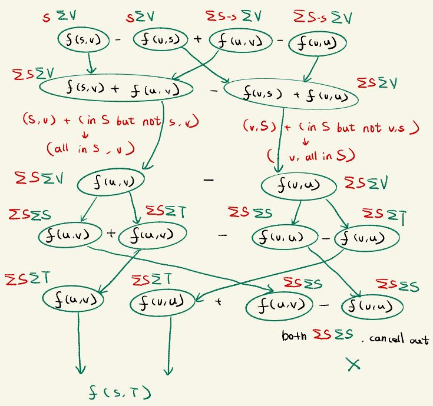

Let G(V,E) be a flow network with source s and sink t, and let f be a flow in G.
Let (S,T) be any cut of G. Then the netflow across (S,T) is f(S,T) = |f|
Click green parts can see explaination
Content
Let G(V,E) be a flow network with source s and sink t, and let f be a flow in G.
Let (S,T) be any cut of G. Then the netflow across (S,T) is f(S,T) = |f|
Proof
By definition of flow conservation for any node u that is not s or t, ∑ v ∈ Vf(u,v) = ∑ v ∈ Vf(v,u)
Move things to left hand side, ∑ v ∈ Vf(u,v) - ∑ v ∈ Vf(v,u) = 0 (1)
Any term in set S except from s satisfies (1) We made a cut and the part contains s is called S
Which means ∑ u ∈ S-{s} ( ∑ v ∈ Vf(u,v) - ∑ v ∈ Vf(v,u) ) = 0 (2) Sum of (in - out) for all vertices in S but s is 0
By definition of flow value |f| = ∑ v ∈ Vf(s,v) - ∑ v ∈ Vf(v,s) (3)
Add (3) to (2) since it is 0: |f| = ∑ v ∈ Vf(s,v) - ∑ v ∈ Vf(v,s) + ∑ u ∈ S-{s} ( ∑ v ∈ Vf(u,v) - ∑ v ∈ Vf(v,u) )
= ∑ v ∈ Vf(s,v) - ∑ v ∈ Vf(v,s) + ∑ u ∈ S-{s} ∑ v ∈ Vf(u,v) - ∑ u ∈ S-{s} ∑ v ∈ Vf(v,u)
Combine ∑ v ∈ Vf(u,v) Combine ∑ v ∈ Vf(v,u)
= ∑ v ∈ V ( f(s,v) + ∑ u ∈ S-{s}f(u,v) ) - ∑ v ∈ V ( f(v,s) + ∑ u ∈ S-{s}f(u,v) )
Combine ∑ v ∈ Vf(s,v) with ∑ u ∈ S-{s} ∑ v ∈ Vf(u,v) Combine ∑ v ∈ Vf(v,s) with ∑ u ∈ S-{s} ∑ v ∈ Vf(v,u)
= ∑ v ∈ V ∑ u ∈ S f(u,v) - ∑ v ∈ V ∑ u ∈ S f(v,u)
The sum of all f(u,v) in S without f(s,v), then plus f(s,v), is just sum of every u in S
The sum of all f(v,u) in S without f(v,s), then plus f(v,s), is just sum of every u in S
And because V = S ∪ T, and S ∪ T = ∅, we can split the V in this equation to S and T
= ∑ v ∈ S ∑ u ∈ S f(u,v) + ∑ v ∈ T ∑ u ∈ S f(u,v) - ∑ v ∈ S ∑ u ∈ S f(v,u) - ∑ v ∈ T ∑ u ∈ S f(v,u)
Divide ∑ v ∈ V into ∑ v ∈ S and ∑ v ∈ T Divide ∑ v ∈ V into ∑ v ∈ S and ∑ v ∈ T
= ∑ v ∈ T ∑ u ∈ S f(u,v) - ∑ v ∈ T ∑ u ∈ S f(v,u) + ( ∑ v ∈ S ∑ u ∈ S f(u,v) - ∑ v ∈ S ∑ u ∈ S f(v,u) )
Put ∑ v ∈ T parts together Put ∑ v ∈ S parts together
And the 2 parts in paranthesis: ∑ v ∈ S ∑ u ∈ S f(u,v) - ∑ v ∈ S ∑ u ∈ S f(v,u)
Each time we pick a pair x=u, y=v in f(u,v), we minus the same set x=v, y=u in f(v,u). Which means they cancell out to be 0.
= ∑ v ∈ T ∑ u ∈ S f(u,v) - ∑ v ∈ T ∑ u ∈ S f(v,u)
= f(S, T)
By definition of f(S, T) = ∑ u ∈ S ∑ v ∈ T f(u,v) - ∑ u ∈ S ∑ v ∈ T f(v,u)
